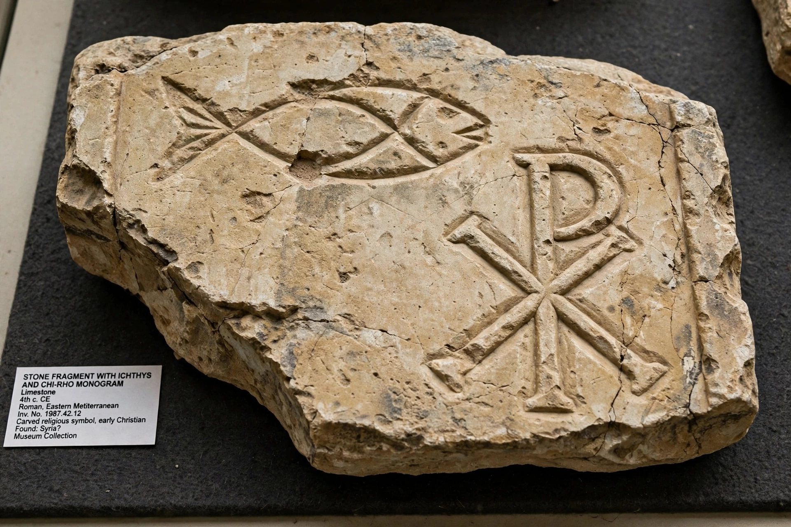

| Period | c. 30s – c. 325 AD (Ante-Nicene period) |
|---|---|
| Origin | Judaea, Roman Empire |
| Key figures | Jesus, the Twelve Apostles, Paul of Tarsus, James the Just |
| Key texts | New Testament writings, Apostolic Fathers |
| Milestone | First Council of Nicaea (325 AD) |
Early Christianity refers to the period of the religion of Christianity from its origins in the 30s AD — in the ministry of Jesus and the mission of his apostles — until the First Council of Nicaea in 325. It is typically divided into the Apostolic Age and the Ante-Nicene period that followed.
Early Christianity originated as a Jewish religious movement in Roman Judaea. Its earliest followers, including the Twelve Apostles, were Jews who proclaimed Jesus of Nazareth as the risen Messiah. Within a few decades, the mission of Paul of Tarsus and others carried the movement to Gentile (non-Jewish) communities around the Mediterranean, and the question of how far converts must observe Jewish law was settled — controversially — in favour of the Gentile mission.
The earliest community was centred in Jerusalem, led after the crucifixion by figures such as Peter, John, and James the Just, the brother of Jesus. The Acts of the Apostles describes the community's life of prayer, shared meals, baptism and the breaking of bread. Paul's letters, written in the 50s AD to communities in Greece, Asia Minor and Rome, are the earliest surviving Christian writings and predate the four Gospels, which were composed roughly between 70 and 100 AD.
Christian communities spread along the trade routes of the Roman Empire — to Antioch (where the followers were first called "Christians"), Alexandria, Rome, Corinth, Ephesus and beyond. Local churches were led by overseers (bishops), elders (presbyters) and deacons. By the early 2nd century, letters of Ignatius of Antioch presuppose a single bishop in each city. Worship centred on Sunday gatherings with readings, preaching, prayer and the Eucharist.
The destruction of the Jerusalem Temple by the Romans in 70 AD accelerated the separation between Christianity and Judaism, a process scholars call the "parting of the ways." Christians also faced sporadic persecution from Roman authorities — under Nero (after the Great Fire of Rome in 64 AD), Decius, Valerian and Diocletian — largely because they refused to sacrifice to the emperor and the gods. Martyrdom became a powerful witness in the early church's memory.
Early Christianity was diverse: Jewish-Christian groups, Marcionites, Gnostic movements and others held differing views of Jesus, scripture and salvation. Over the 2nd and 3rd centuries, what became mainstream ("proto-orthodox") Christianity defined itself through a rule of faith, a developing canon of the New Testament, and episcopal succession. Writers such as Justin Martyr, Irenaeus, Tertullian and Origen shaped its theology.
The conversion of Constantine the Great, the Edict of Milan (313) legalising Christianity, and the First Council of Nicaea (325), which addressed the Arian controversy and produced a creed, close the conventional boundary of the early Christian period and open the era of the state church of the Roman Empire.
See also: Acts of the Apostles · Saint Peter · Paul the Apostle · First Council of Nicaea